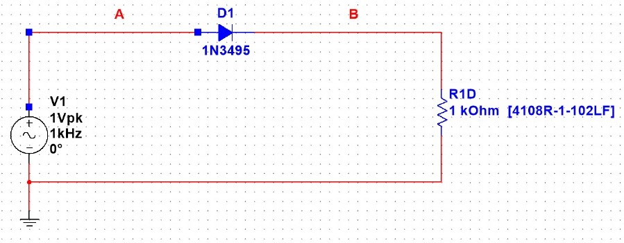
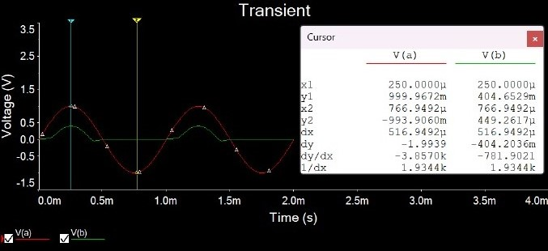
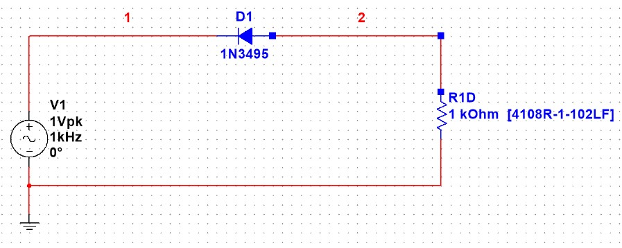
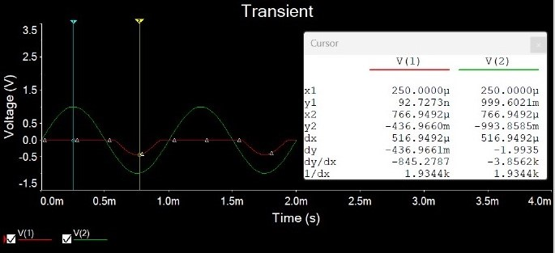

Apa Itu Dioda?
Dioda merupakan komponen semikonduktor yang paling sederhana. Kata dioda berasal dari pendekatan kata yaitu dua
elektroda yang mana (di berarti dua) mempunyai dua buah elektroda yaitu anoda dan katoda. Dioda termasuk kedalam
ketegori komponen elektronika aktif. Dioda terbentuk dari bahan semikonduktor tipe P dan N yang digabungkan. Dengan
demikian diode sering disebut PN junction. Dioda memiliki sifat dapat menghantarkan arus pada tegangan maju, serta
menghambat arus pada tegangan balik (penyearah). Dioda memiliki dua kaki, yakni kaki anoda dan kaki katoda.
Disini kami diminta oleh Dosen Elektronika kami untuk mencoba bereksperimen dengan Multisim di device kami. Saya
mencoba untuk membuat rangkaian penyearah sesuai dengan PDF Minggu ke 3. Komponen yang digunakan di Multisim
untuk eksperimen kali ini adalah AC Voltage, Resistor, Dioda dan Ground.
Simulasi
1. anoda


1. katoda


Di katoda, titik minimumnya adalah -993.8585m dan titik maksimumnya adalah 999.6021m